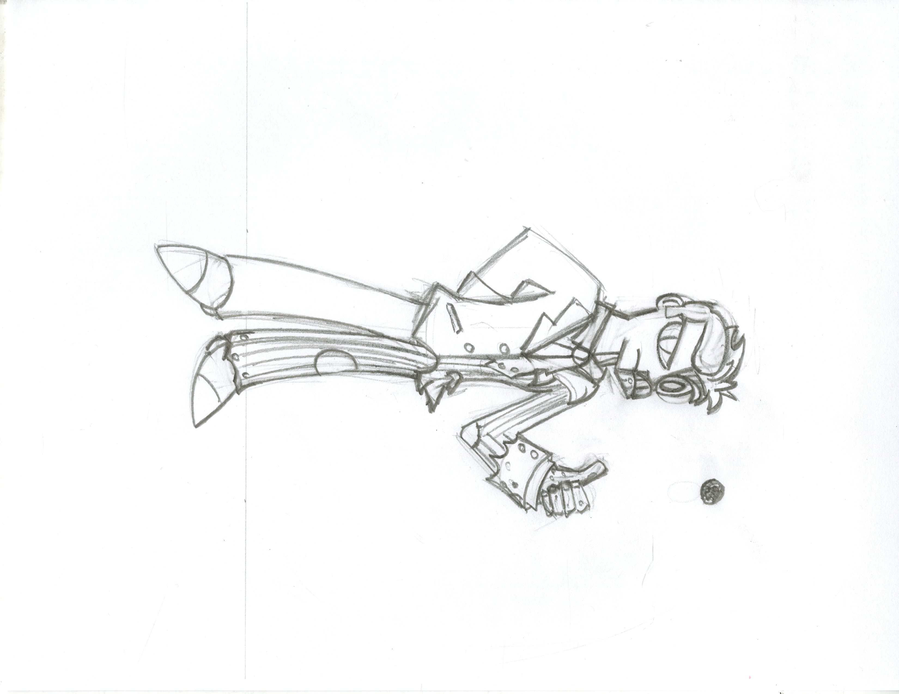
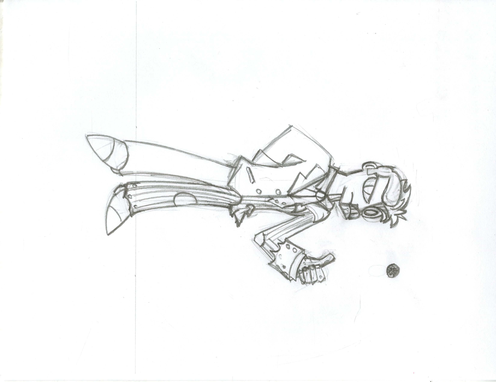

Introduction
During My lifetime, I have endeavoured to produce artwork. Using my Pencils, I have created numerous drawings. Presented below are some of my favorite pieces.

My artwork is an extension of my personality, and spirit. They are synomymous with the best aspects of my being. These drawing bring me joy, as I hope they do for you.
About The Artist
Alexander Mamrol is a student of jefferson univerity, and an Arch. study Major. He has a hobby of creating multiple pieces of art. The artwork created ranges from drawings, cardboard models, and detailed schematics. Passions include cartoons and videogames. Will produce drawings for commisions, and has a great personality.
Alexander mamrol
The Eccentric, creative, and one of a kind creator.

Personal Favories
Some of my personal best include detailed illustrations of locomotives.


Character design is a branch of art I have recently delved into.
 

My specialty is elaborate full page pieces, presenting an expansive world of wonder.

This is my most recent drawing, "The Splendor of AnneMaria". It is a continuation of my pirate branch of art. Here, the titular ship is docked at Callypso Cove. This drawing is scheduled to be colored.

This is one of my oldest pieces. "Show your true colors" is my go to artwork for inspiration.